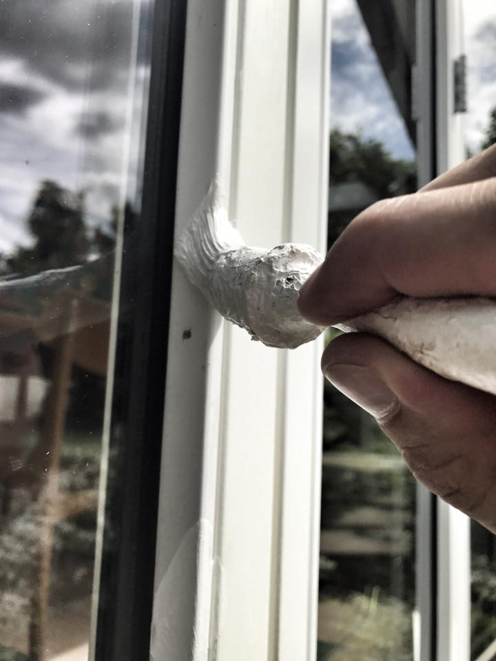

Størstedelen af vores opgaver kommer gennem anbefalinger fra tidligere kunder og samarbejdspartnere – og det er der én grund til: Vi gør det ordentligt. Godt håndværk, kvalitets materialer og venlighed er grundstenene – og derudover holder vi naturligvis vores aftaler.
En vigtig del af et godt håndværk er, at du som kunde, føler dig tryg med det arbejde, der bliver udført. Derfor sørger vi altid for skrifteligt at udspecificere din opgave, inden vi går i gang samt ved ønskede ændringer, sørger vi altid for at sende et revideret tilbud – dette er for at undgå, at der kommer nogle overraskelser, når arbejdet skal afsluttes og afregnes.
Inden det egentlige malerarbejde kan starte, ligger der oftest et vigtigt forarbejde. Et forarbejde der skal laves for at opnå det flotteste og mest holdbare resultat. Overfladen skal vaskes ren og slibes for at få malingen til at binde. Derudover skal der oftest også spartles og filtes. Dette arbejde sørger vi altid at få gjort ordentligt, da det er nødvendigt for at opnå det bedst mulige resultat.
Vi har et stærkt samarbejde med malergrossisten Sigma, som leverer maling og andre materialer af absolut højeste kvalitet. Malingen fra Sigma er i vores øjne den bedste maling på markedet og har en høje rengøringsevne – så hvis der kommer en plet på væggen, kan den tørres af uden man kan se spor efter det. Paneler og træværk males med en polyuretanforstærket maling, som tørrer ekstra stærkt op, og beskytter i dagligdagen, når du støvsuger eller vasker gulv.
For os er det vigtigt, at det både skal være rart at være på arbejde og en god oplevelse at have besøg af maleren. Vi sørger derfor altid for at holde vores aftaler og opfører os respektfuldt i dit hjem. Vi dækker naturligvis ordentlig af, inden vi går i gang med malerarbejdet samt rydder op efter os, så du med ro i maven kan lade os udføre dit malerarbejde.